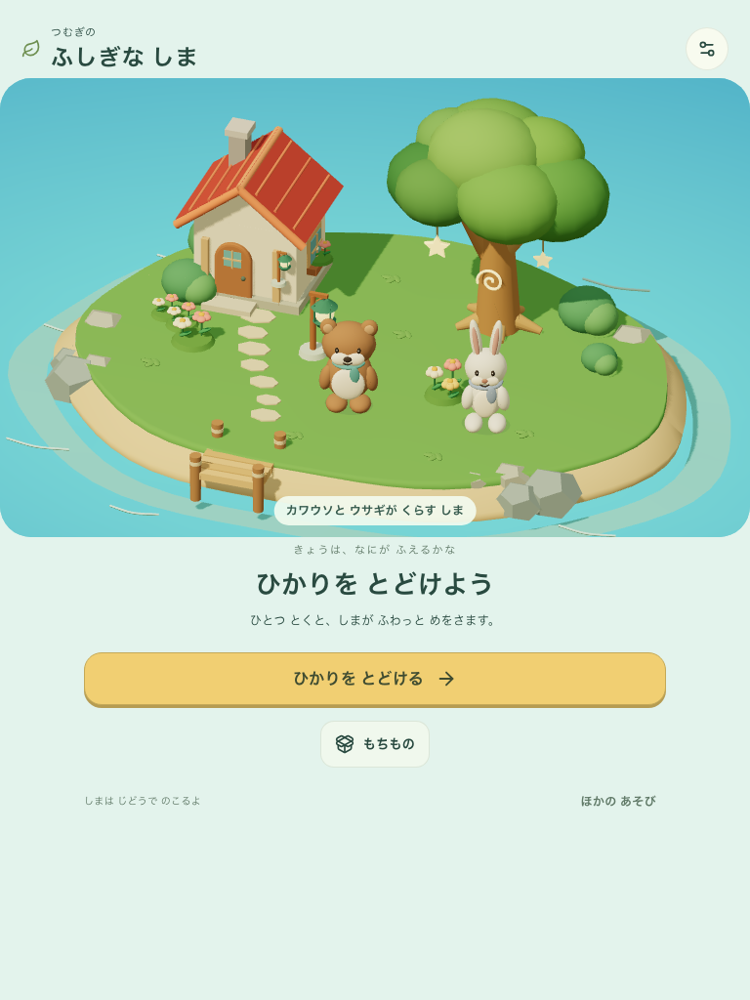

2026-09-07 · LOCAL IMPLEMENTATION REVIEW
ふしぎな しま
学ぶ → 光 → 贈り物 → 配置 → 動物の暮らし → 次の学習
実アプリ: http://127.0.0.1:5298/#/island
候補: mystic-island-three-v1
delivery: mystic-island-v1 · VITE_ISLAND_ENABLED=true
revision: aa36adad7dcc-island-ff6a931ccb86
build: aa36adad7dcc-island-ff6a931ccb86:f3e7948e-d4d3-492a-9962-a6974fcb8420
すべて同じproduction形式のローカルビルド。初期プロフィールのみ検証用に作成し、回答・受取・配置・再開は実UIを操作。音なし、通常モーション、各contextは空のcacheから開始。公開先への反映と独立した子どもの観察は未実施。ムードから実画面へ
 ユーザー提供ムード。最終絵の厳密な一致目標ではない。
ユーザー提供ムード。最終絵の厳密な一致目標ではない。
最終実画面。形と素材を整理したThree.jsの島。02 自分の島
 390 × 844 · タッチ768 × 1024 · キーボード
390 × 844 · タッチ768 × 1024 · キーボード